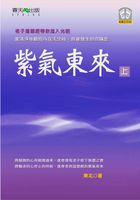

|
|
| 首頁 |
|
 紫氣東來（上） 作者序中國人何其有幸，早在距今三千年前就誕生了老子這樣一位大聖人，留給後代像《道德經》這麼珍貴的文化遺產。兩千多年以來的名人以及賢聖沒有不研究《道德經》者，沒有不受到老子智慧的指引者。即便是在秦始皇焚書坑儒的時代，《道德經》仍是免於焚燒之書。即便是當朝皇帝滅道興佛，道藏全部焚毀時，《道德經》也不在其數。更有許多皇帝精讀《道德經》，其中甚有幾位皇帝如唐玄宗、宋徽宗及明太祖等都曾著書註解《道德經》。宋徽宗還從不同的角度三次解讀《道德經》。 歷史上解讀《道德經》的著作不下千家，其中解釋《道德經》最佳者有白玉禪、龍淵子、張三豐和近代的黃元吉，他們的解釋較接近老子《道德經》的原義。張三豐所註的《道德經》沒有在坊間流傳，只有隱仙派的真正傳人方可得見。隱仙派源自文始，文始即是尹喜。尹喜是第一個以道德經而成就大道的人，亦是第一個解釋道德經的人。他所著的文始經即是第一部解釋道德經的書。 在眾多解釋《道德經》的著作中，均體現了眾多的智慧和獨到之見。如，於《道德經》中可以找到環保思想，找到軍事謀略，找到治國方略，找到處事哲學，找到科學，總之每個人能找到自已要找的，也就是仁者見仁，智者見智。不論讀者是什麼程度，都可以找到自己所需要的啟發和智慧。但是人們從《道德經》中所受到的啟發和所學到的智慧，其實並不是《道德經》的本意。 若說老子講環保，老子卻不許向外看。老子講「知人者智，自知者明。」是說自知者才是心中有光明。因此老子又說「聖人為腹，不為目。」或說「虛其心，實其腹。」都是在說不許向外看，只許向內觀察。 若說老子講軍事謀略，《道德經》中卻講：「夫佳兵者不祥之器，或惡之，故有道者不處。」又說：「以道佐人主者，不以兵強天下。」由此兩句可知，老子的要旨不是軍事謀略。 若說《道德經》是談治理國家，老子卻說：「以智治國，國之賊。不以智治國，國之福。」由此兩句可知，老子不講如何以智治理國家。 若說《道德經》是談人生哲學，但老子卻說：「絕學無憂。」可見老子並不提倡人生哲學。 若說老子《道德經》是在講科學，老子卻說：「智慧出，有大偽。」可見老子並不重視所謂的科學。 若說老子《道德經》是在講道德仁義，但老子卻說：「上德不德，下德執德。」執著之者不明道德。老子又說：「大道廢，有仁義。」可見老子所講的道德仁義是以不離大道為前提的。道是一切的本質，德只是道的顯現。因德近於道，將德名為貴，但不可以貴德而失道。所以老子才說：「失道而後德，失德而後仁，失仁而後義，失義而後禮。夫禮者，忠信之薄而亂之首也。」由此可知老子不是教仁義道德的。 老子講的道是無為之道，老子講的德是清淨之德。老子講的是一切的源頭，於源頭中並沒有所謂的學術與智慧。人們說的各種智慧都是頭腦的運作，而老子不許動用頭腦。老子講的只是清淨的內在之光，是純然的般若觀照，從經文中就可明顯看到老子的告誡。老子金剛般地站在那如如不動的光明中，不斷地將無主的心拉回來。老子一再地暗示，接近大道唯一的可能是，不可以言說，只允許觀看。 老子所說的道，觀之不可見，聽之不可聞，搏之不可得。這是因為老子所說的大道，以聲音來說是最大的聲音，大到聽不見，即所謂大音希聲。老子所說的大道，以形象來說是最大的形象，大到無形。這樣的大道難以描述，所以老子說道隱無名。 老子指示若入此大道，須行無為之行，須明無言之教，是讓修行者學習那個不可以學習的，看到那不可看到的，聽那個不可以聽的，成就那不可以成就的，得到那不可以得到的。非常明顯地，老子所講的已超越人們的頭腦。因此若以頭腦的分別能力來領悟大道的不可分別的妙用，實在是不可能的事。 老子是至高無上的，所以名為太上。老子是統一的、平等的，所以不可能此處講分別，彼處講不分別。老子是無為的，所以不可能行於任何造作之行。老子是清淨的，所以不可能有任何頭腦妄想之處。 以老子所講的大道的無上來看，人我是假的，世界是幻化的，一切現象界都非真實，而老子只是不得不用人的語言勉強傳達此簡易的大道。若欲跟隨老子行大道行，須明了老子所用語言的真實秘義才行。語言是被老子借用的工具，是用來指引行者歸向大道的方便。這種被借用的語言只是一種傳達的手段，只是路途中的標誌，並非是真實的大道，語言只是為了指向大道的方便之舉。大道的追隨者應超越膚淺有限的語言，而領悟老子所傳達的甚深秘義。 為了使大道的追隨者能超越文字的表相，領悟老子所要傳達的甚深秘義，筆者不揣淺陋，茲就個人多年修行體驗，從智慧觀照的角度出發，為文闡釋《道德經》，期盼能與讀者分享，探討老子的深廣智慧。老子所講述的大道無形質，無相貌，獨一無二，渾然自成，亙古以來，周行不殆，無始無終，很難用文字將其具體描述出來。強而言之，則言道為德之體，德則為道之相，此相即是清淨相。 清淨是德之至，無為是道之用。無為即是觀照，觀照是大道的無為妙用。於如是無為的觀照中，可展現出無窮無盡的無作妙力。此無作妙力即是老子的無為而無不為的奇蹟，這種奇蹟就是人人本具的無上智慧，因此觀照智慧中有和平、光明、平等、自在的特性。又因於觀照中無取無捨，無諸分別，只是純淨的無作無為地觀照，所以其心必然清淨。清淨之心，道自來居。因道之所居，而得顯明，清淨是德的最高體現。大道的無作妙力只能於無為觀照中展現，因此才說無為道之用。又因無作妙力可以達成一切，所以無為無不為。 老子的甚深智慧至簡至易，本文呼喚每位炎黃子孫和龍的傳人，在此振興時刻，要大力弘揚中華文化的瑰寶─老子的甚深智慧，以便讓世界上的每一個角落，每一個人都有幸目睹中華文化的紫氣東來，以自己的生命，領悟紫氣東來中的奇蹟，感知不可思議的無作妙力。 【編者註】 老子《道德經》全書共分八十一章。前半段闡明無為是「道」之用，後半段闡明清靜是「德」之至。 第一章到第三十七章，老子講述了無形無相，不可聽聞，不可視見，不可觸摸的大道，以及大道的無作妙力。第三十八章至八十一章，老子講述清淨之德。 為了方便讀者應用，本書《紫氣東來》的大道行與清淨的殊勝之德分為上下二冊。上冊解讀老子《道德經》中大道的無為之用，下冊解讀老子《道德經》中大道的清淨之德。 《紫氣東來》下冊的清淨之德，已於二OO七年六月出版。 |
| 著作權所有 請勿任意轉載 Copyright © 2000-2026 Is Zen Center All Rights Reserved |